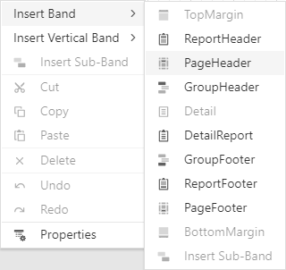

Table Reports
This tutorial describes how to create a data-bound report that displays information in a tabular format. Table reports should not be confused with hierarchical master-detail reports, nor with cross-tab reports.

Bind the report to a required data source.
Add the Page Header band to the report to print the column headers at the top of every document page. To do this, select the Insert Page Header Band command from the report's context menu.

Switch to the Field List, select data fields, hold
Shiftwhen you drag fields and drop them onto the report design area. This creates a data table with data field names.
To provide dynamic content to the report, select data fields and drop them onto the Detail band in the Field list.

This creates a table with the same number of cells as the number of fields selected with each cell bound to the appropriate data field.
Click an empty place on the report's surface and draw a rectangle around the table to select it.

Alternatively, you can select one cell and press
Escto move one level up and select an entire row.Expand the Appearance category and specify the Font, Text Alignment, and Borders properties to customize table appearance.

Define a currency format for the UnitPrice cell. Select the cell and click the Text Format String property's ellipsis button. Select the appropriate format in the invoked Format String Editor editor and click OK.

To further improve table readability, you can apply different visual styles to odd and even rows. See Report Visual Styles to learn more.

See the Use Tables section to learn how to add or remove table rows and cells, and how to convert table cells to separate label controls.
Switch to Print Preview to see the generated report.